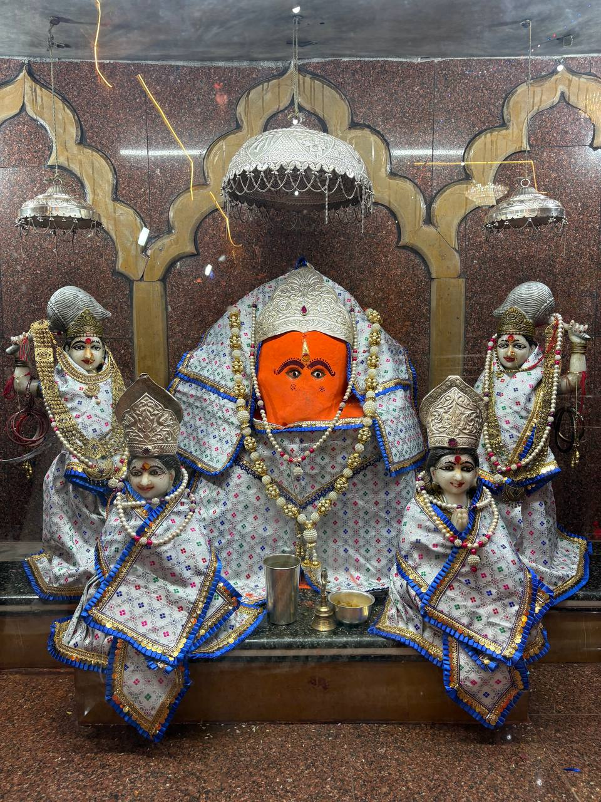
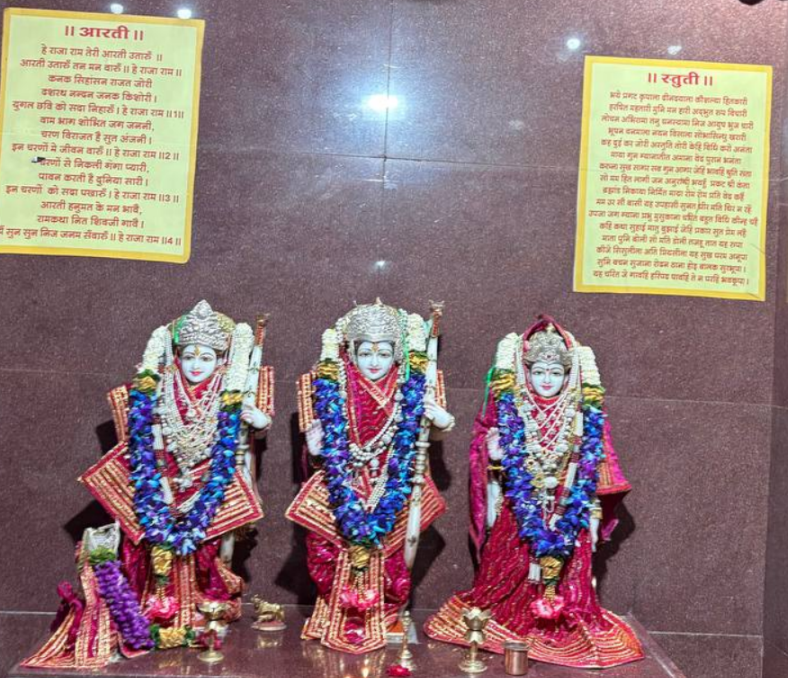
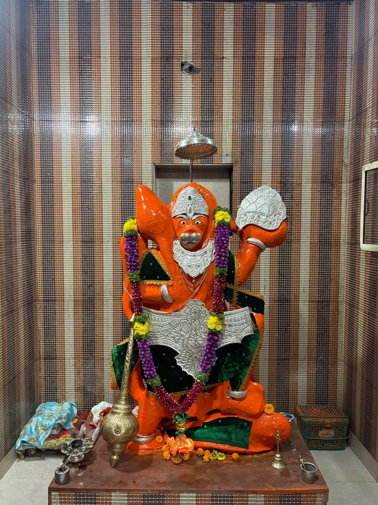
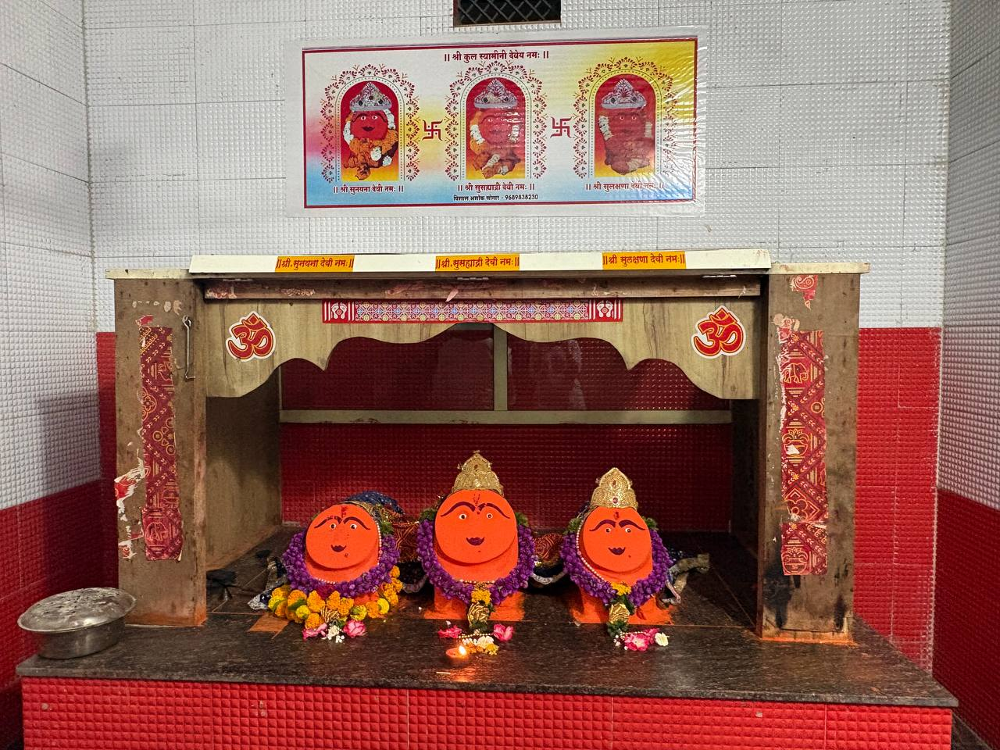
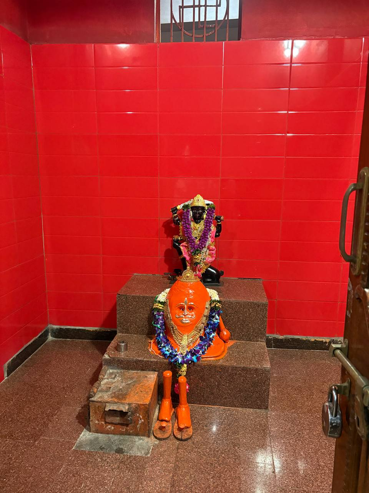

Ganesh Mandir
The Ganesh Mandir is dedicated to Lord Ganesha, the remover of obstacles and the deity worshipped before beginning any auspicious work. Devotees offer prayers here seeking blessings for prosperity and success.

Ram Darbar
Ram Darbar represents Lord Rama along with Sita, Lakshman and Hanuman. This shrine symbolizes righteousness, devotion and family harmony.

Hanuman Mandir
Dedicated to Lord Hanuman, the temple attracts devotees seeking courage, strength and protection from negative energies.

Sapt Mata Mandir
The Sapt Mata shrine is devoted to the seven divine mother goddesses. Devotees worship them for protection, prosperity and spiritual growth.

Kal Bhairav Mandir
Kal Bhairav is a fierce manifestation of Lord Shiva who protects devotees and guards sacred places. Worshipping here is believed to remove fear and obstacles.

Pashupatinath Mahadev Mandir
This shrine dedicated to Lord Shiva represents the supreme protector of all living beings. Devotees offer prayers for spiritual liberation and divine blessings.
Bhairav Mandir
Bhairav is another powerful manifestation of Lord Shiva and is worshipped for protection and courage.